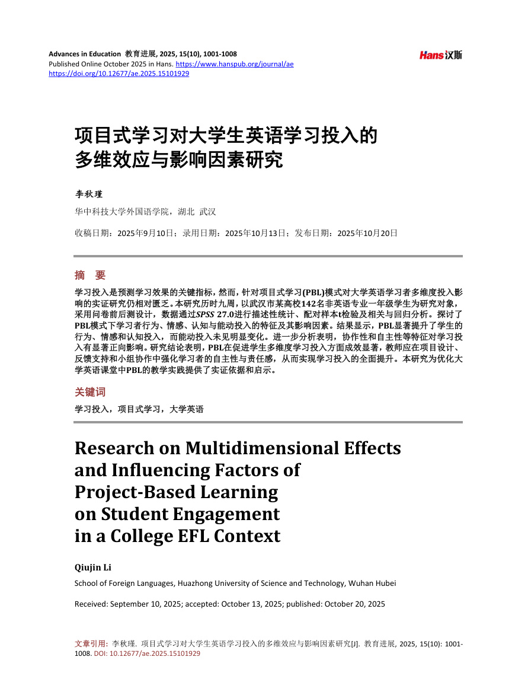
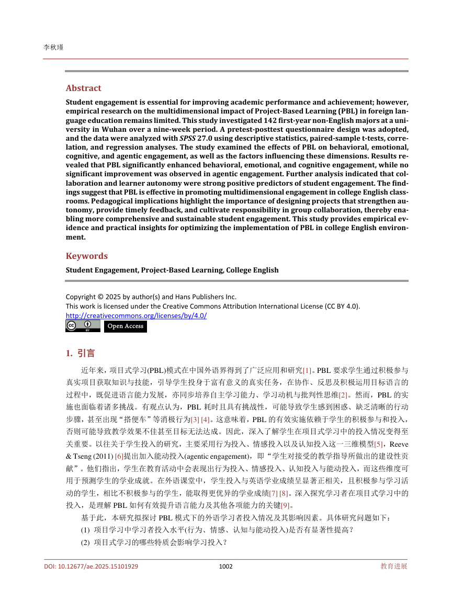
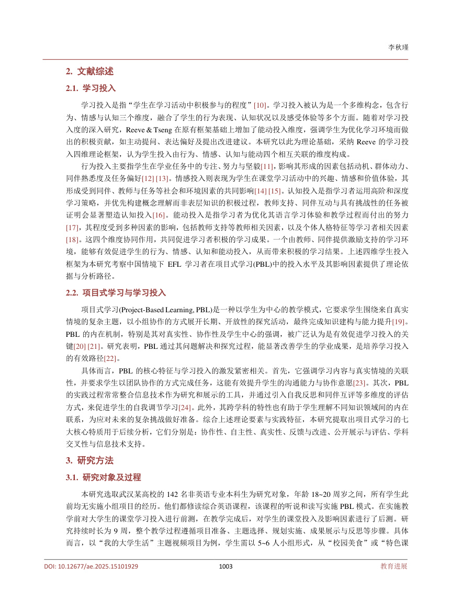
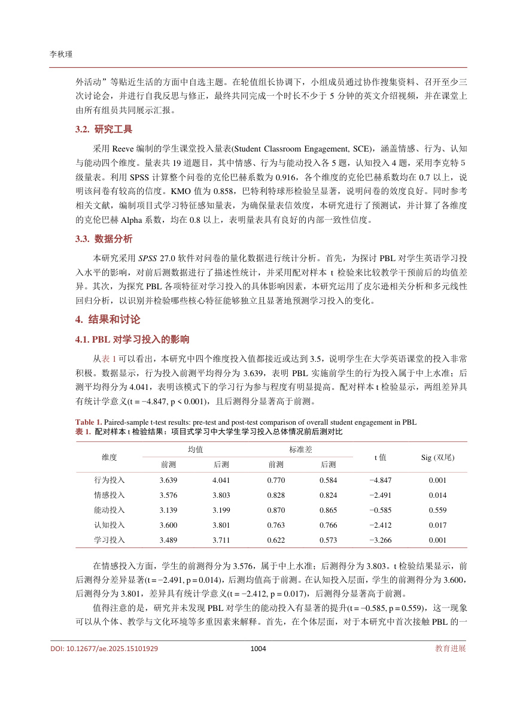
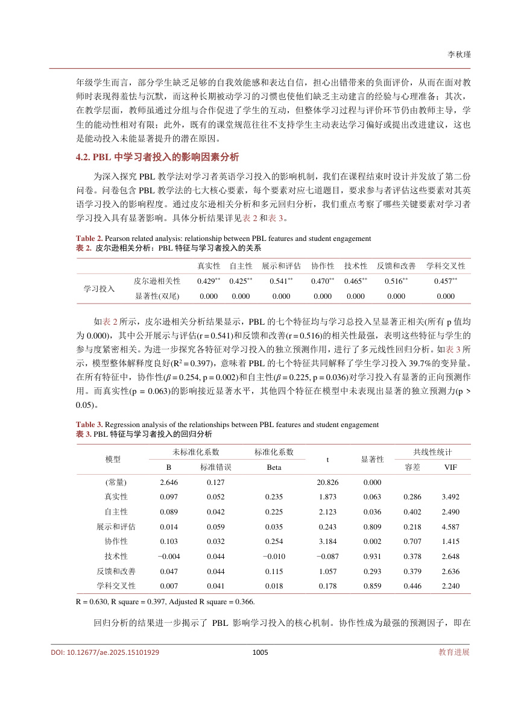
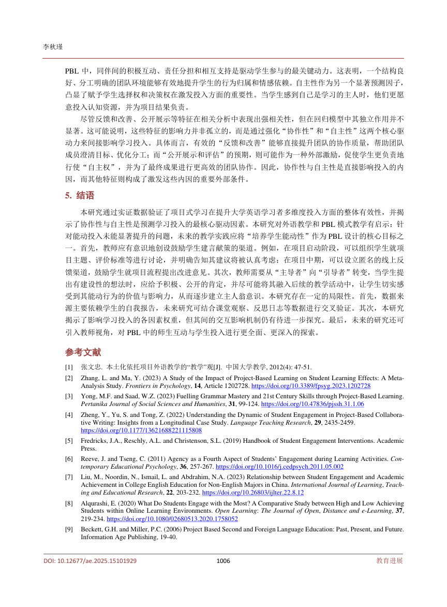
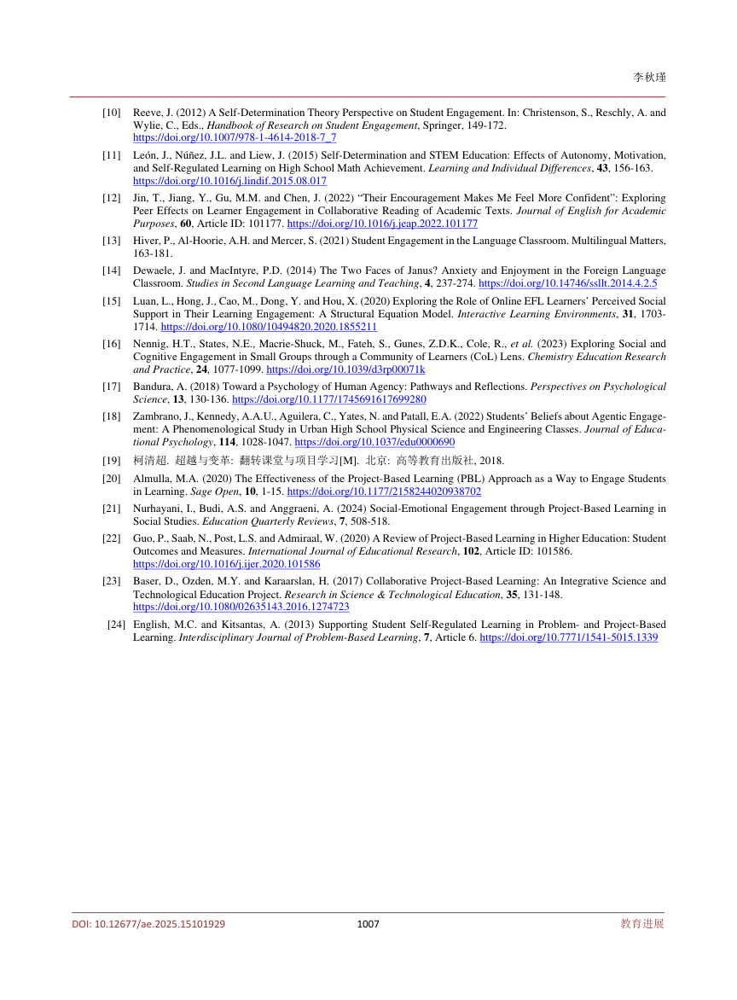
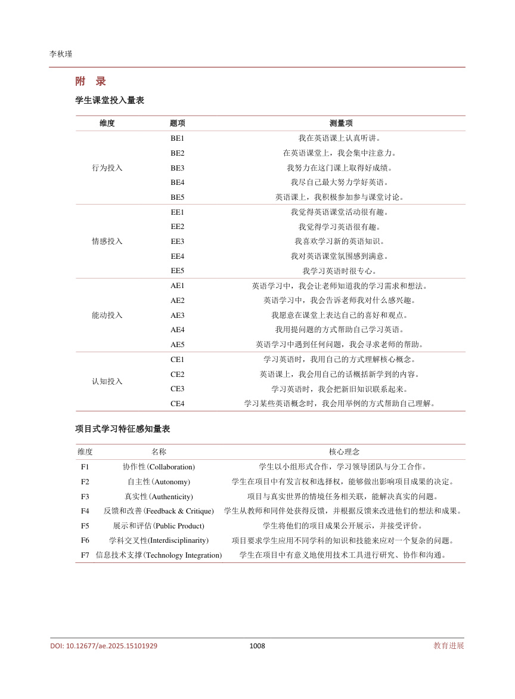

1. 引言
近年来，项目式学习(PBL)模式在中国外语界得到了广泛应用和研究[1]。PBL 要求学生通过积极参与真实项目获取知识与技能，引导学生投身于富有意义的真实任务，在协作、反思及积极运用目标语言的过程中，既促进语言能力发展，亦同步培养自主学习能力、学习动机与批判性思维[2]。然而，PBL 的实施也面临着诸多挑战。有观点认为，PBL 耗时且具有挑战性，可能导致学生感到困惑、缺乏清晰的行动步骤，甚至出现“搭便车”等消极行为[3] [4]。这意味着，PBL 的有效实施依赖于学生的积极参与和投入，否则可能导致教学效果不佳甚至目标无法达成。因此，深入了解学生在项目式学习中的投入情况变得至关重要。以往关于学生投入的研究，主要采用行为投入、情感投入以及认知投入这一三维模型[5]，Reeve& Tseng (2011) [6]提出加入能动投入(agentic engagement)，即“学生对接受的教学指导所做出的建设性贡献”。他们指出，学生在教育活动中会表现出行为投入、情感投入、认知投入与能动投入，而这些维度可用于预测学生的学业成就。在外语课堂中，学生投入与英语学业成绩呈显著正相关，且积极参与学习活动的学生，相比不积极参与的学生，能取得更优异的学业成绩[7] [8]。深入探究学习者在项目式学习中的投入，是理解PBL 如何有效提升语言能力及其他各项能力的关键[9]。
基于此，本研究拟探讨PBL 模式下的外语学习者投入情况及其影响因素。具体研究问题如下：
(1) 项目学习中学习者投入水平(行为、情感、认知与能动投入)是否有显著性提高？
(2) 项目式学习的哪些特质会影响学习投入？
2. 文献综述
2.1. 学习投入
学习投入是指“学生在学习活动中积极参与的程度”[10]。学习投入被认为是一个多维构念，包含行为、情感与认知三个维度，融合了学生的行为表现、认知状况以及感受体验等多个方面。随着对学习投入度的深入研究，Reeve & Tseng 在原有框架基础上增加了能动投入维度，强调学生为优化学习环境而做出的积极贡献，如主动提问、表达偏好及提出改进建议。本研究以此为理论基础，采纳Reeve 的学习投入四维理论框架，认为学生投入由行为、情感、认知与能动四个相互关联的维度构成。
行为投入主要指学生在学业任务中的专注、努力与坚毅[11]，影响其形成的因素包括动机、群体动力、同伴熟悉度及任务偏好[12] [13]。情感投入则表现为学生在课堂学习活动中的兴趣、情感和价值体验，其形成受到同伴、教师与任务等社会和环境因素的共同影响[14] [15]。认知投入是指学习者运用高阶和深度学习策略，并优先构建概念理解而非表层知识的积极过程，教师支持、同伴互动与具有挑战性的任务被证明会显著塑造认知投入[16]。能动投入是指学习者为优化其语言学习体验和教学过程而付出的努力[17]，其程度受到多种因素的影响，包括教师支持等教师相关因素，以及个体人格特征等学习者相关因素[18]。这四个维度协同作用，共同促进学习者积极的学习成果。一个由教师、同伴提供激励支持的学习环境，能够有效促进学生的行为、情感、认知和能动投入，从而带来积极的学习结果。上述四维学生投入框架为本研究考察中国情境下EFL 学习者在项目式学习(PBL)中的投入水平及其影响因素提供了理论依据与分析路径。
2.2. 项目式学习与学习投入
项目式学习(Project-Based Learning, PBL)是一种以学生为中心的教学模式，它要求学生围绕来自真实情境的复杂主题，以小组协作的方式展开长期、开放性的探究活动，最终完成知识建构与能力提升[19]。PBL 的内在机制，特别是其对真实性、协作性及学生中心的强调，被广泛认为是有效促进学习投入的关键[20] [21]。研究表明，PBL 通过其问题解决和探究过程，能显著改善学生的学业成果，是培养学习投入的有效路径[22]。
具体而言，PBL 的核心特征与学习投入的激发紧密相关。首先，它强调学习内容与真实情境的关联性，并要求学生以团队协作的方式完成任务，这能有效提升学生的沟通能力与协作意愿[23]。其次，PBL的实践过程常常整合信息技术作为研究和展示的工具，并通过引入自我反思和同伴互评等多维度的评估方式，来促进学生的自我调节学习[24]。此外，其跨学科的特性也有助于学生理解不同知识领域间的内在联系，为应对未来的复杂挑战做好准备。综合上述理论要素与实践特征，本研究提取出项目式学习的七大核心特质用于后续分析，它们分别是：协作性、自主性、真实性、反馈与改进、公开展示与评估、学科交叉性与信息技术支持。
3. 研究方法
3.1. 研究对象及过程
本研究选取武汉某高校的142 名非英语专业本科生为研究对象，年龄18~20 周岁之间，所有学生此前均无实施小组项目的经历。他们都修读综合英语课程，该课程的听说和读写实施PBL 模式。在实施教学前对大学生的课堂学习投入进行前测，在教学完成后，对学生的课堂投入及影响因素进行了后测。研究持续时长为9 周，整个教学过程遵循项目准备、主题选择、规划实施、成果展示与反思等步骤。具体而言，以“我的大学生活”主题视频项目为例，学生需以5~6 人小组形式，从“校园美食”或“特色课外活动”等贴近生活的方面中自选主题。在轮值组长协调下，小组成员通过协作搜集资料、召开至少三次讨论会，并进行自我反思与修正，最终共同完成一个时长不少于5 分钟的英文介绍视频，并在课堂上由所有组员共同展示汇报。
3.2. 研究工具
采用Reeve 编制的学生课堂投入量表(Student Classroom Engagement, SCE)，涵盖情感、行为、认知与能动四个维度。量表共19 道题目，其中情感、行为与能动投入各5 题，认知投入4 题，采用李克特５级量表。利用SPSS 计算整个问卷的克伦巴赫系数为0.916，各个维度的克伦巴赫系数均在0.7 以上，说明该问卷有较高的信度。KMO 值为0.858，巴特利特球形检验呈显著，说明问卷的效度良好。同时参考相关文献，编制项目式学习特征感知量表，为确保量表信效度，本研究进行了预测试，并计算了各维度的克伦巴赫Alpha 系数，均在0.8 以上，表明量表具有良好的内部一致性信度。
3.3. 数据分析
本研究采用SPSS 27.0 软件对问卷的量化数据进行统计分析。首先，为探讨PBL 对学生英语学习投入水平的影响，对前后测数据进行了描述性统计，并采用配对样本t 检验来比较教学干预前后的均值差异。其次，为探究PBL 各项特征对学习投入的具体影响因素，本研究运用了皮尔逊相关分析和多元线性回归分析，以识别并检验哪些核心特征能够独立且显著地预测学习投入的变化。
4. 结果和讨论
4.1. PBL 对学习投入的影响
从表1 可以看出，本研究中四个维度投入值都接近或达到3.5，说明学生在大学英语课堂的投入非常积极。数据显示，行为投入前测平均得分为3.639，表明PBL 实施前学生的行为投入属于中上水准；后测平均得分为4.041，表明该模式下的学习行为参与程度有明显提高。配对样本t 检验显示，两组差异具有统计学意义(t = −4.847, p < 0.001)，且后测得分显著高于前测。Table 1. Paired-sample t-test results: pre-test and post-test comparison of overall student engagement in PBL表1. 配对样本t 检验结果：项目式学习中大学生学习投入总体情况前后测对比
均值
标准差
维度
t 值
Sig (双尾)
前测
后测
前测
后测
行为投入
3.639
4.041
0.770
0.584
−4.847
0.001
情感投入
3.576
3.803
0.828
0.824
−2.491
0.014
能动投入
3.139
3.199
0.870
0.865
−0.585
0.559
认知投入
3.600
3.801
0.763
0.766
−2.412
0.017
学习投入
3.489
3.711
0.622
0.573
−3.266
0.001
在情感投入方面，学生的前测得分为3.576，属于中上水准；后测得分为3.803。t 检验结果显示，前后测得分差异显著(t = −2.491, p = 0.014)，后测均值高于前测。在认知投入层面，学生的前测得分为3.600，后测得分为3.801，差异具有统计学意义(t = −2.412, p = 0.017)，后测得分显著高于前测。
值得注意的是，研究并未发现PBL 对学生的能动投入有显著的提升(t = −0.585, p = 0.559)，这一现象可以从个体、教学与文化环境等多重因素来解释。首先，在个体层面，对于本研究中首次接触PBL 的一年级学生而言，部分学生缺乏足够的自我效能感和表达自信，担心出错带来的负面评价，从而在面对教师时表现得羞怯与沉默，而这种长期被动学习的习惯也使他们缺乏主动建言的经验与心理准备；其次，在教学层面，教师虽通过分组与合作促进了学生的互动，但整体学习过程与评价环节仍由教师主导，学生的能动性相对有限；此外，既有的课堂规范往往不支持学生主动表达学习偏好或提出改进建议，这也是能动投入未能显著提升的潜在原因。
4.2. PBL 中学习者投入的影响因素分析
为深入探究PBL 教学法对学习者英语学习投入的影响机制，我们在课程结束时设计并发放了第二份问卷。问卷包含PBL 教学法的七大核心要素，每个要素对应七道题目，要求参与者评估这些要素对其英语学习投入的影响程度。通过皮尔逊相关分析和多元回归分析，我们重点考察了哪些关键要素对学习者学习投入具有显著影响。具体分析结果详见表2 和表3。Table 2. Pearson related analysis: relationship between PBL features and student engagement表2. 皮尔逊相关分析：PBL 特征与学习者投入的关系
真实性
自主性
展示和评估
协作性
技术性
反馈和改善
学科交叉性
皮尔逊相关性
0.429**
0.425**
0.541**
0.470**
0.465**
0.516**
0.457**学习投入
显著性(双尾)
0.000
0.000
0.000
0.000
0.000
0.000
0.000
如表2 所示，皮尔逊相关分析结果显示，PBL 的七个特征均与学习总投入呈显著正相关(所有p 值均为0.000)，其中公开展示与评估(r = 0.541)和反馈和改善(r = 0.516)的相关性最强，表明这些特征与学生的参与度紧密相关。为进一步探究各特征对学习投入的独立预测作用，进行了多元线性回归分析。如表3 所示，模型整体解释度良好(R2 = 0.397)，意味着PBL 的七个特征共同解释了学生学习投入39.7%的变异量。在所有特征中，协作性(β = 0.254, p = 0.002)和自主性(β = 0.225, p = 0.036)对学习投入有显著的正向预测作用。而真实性(p = 0.063)的影响接近显著水平，其他四个特征在模型中未表现出显著的独立预测力(p >0.05)。Table 3. Regression analysis of the relationships between PBL features and student engagement表3. PBL 特征与学习者投入的回归分析
未标准化系数
标准化系数
共线性统计
模型
t
显著性
B
标准错误
Beta
容差
VIF
(常量)
2.646
0.127
20.826
0.000
真实性
0.097
0.052
0.235
1.873
0.063
0.286
3.492
自主性
0.089
0.042
0.225
2.123
0.036
0.402
2.490
展示和评估
0.014
0.059
0.035
0.243
0.809
0.218
4.587
协作性
0.103
0.032
0.254
3.184
0.002
0.707
1.415
技术性
−0.004
0.044
−0.010
−0.087
0.931
0.378
2.648
反馈和改善
0.047
0.044
0.115
1.057
0.293
0.379
2.636
学科交叉性
0.007
0.041
0.018
0.178
0.859
0.446
2.240 R = 0.630, R square = 0.397, Adjusted R square = 0.366.
回归分析的结果进一步揭示了PBL 影响学习投入的核心机制。协作性成为最强的预测因子，即在PBL 中，同伴间的积极互动、责任分担和相互支持是驱动学生参与的最关键动力。这表明，一个结构良好、分工明确的团队环境能够有效地提升学生的行为归属和情感依赖。自主性作为另一个显著预测因子，凸显了赋予学生选择权和决策权在激发投入方面的重要性。当学生感到自己是学习的主人时，他们更愿意投入认知资源，并为项目结果负责。
尽管反馈和改善、公开展示等特征在相关分析中表现出强相关性，但在回归模型中其独立作用并不显著。这可能说明，这些特征的影响力并非孤立的，而是通过强化“协作性”和“自主性”这两个核心驱动力来间接影响学习投入。具体而言，有效的“反馈和改善”能够直接提升团队的协作质量，帮助团队成员澄清目标、优化分工；而“公开展示和评估”的预期，则可能作为一种外部激励，促使学生更负责地行使“自主权”，并为了最终成果进行更高效的团队协作。因此，协作性与自主性是直接影响投入的内因，而其他特征则构成了激发这些内因的重要外部条件。
5. 结语
本研究通过实证数据验证了项目式学习在提升大学英语学习者多维度投入方面的整体有效性，并揭示了协作性与自主性是预测学习投入的最核心驱动因素。本研究对外语教学和PBL 模式教学有启示：针对能动投入未能显著提升的问题，未来的教学实践应将“培养学生能动性”作为PBL 设计的核心目标之一。首先，教师应有意识地创设鼓励学生建言献策的渠道。例如，在项目启动阶段，可以组织学生就项目主题、评价标准等进行讨论，并明确告知其建议将被认真考虑；在项目中期，可以设立匿名的线上反馈渠道，鼓励学生就项目流程提出改进意见。其次，教师需要从“主导者”向“引导者”转变，当学生提出有建设性的想法时，应给予积极、公开的肯定，并尽可能将其融入后续的教学活动中，让学生切实感受到其能动行为的价值与影响力，从而逐步建立主人翁意识。本研究存在一定的局限性。首先，数据来源主要依赖学生的自我报告，未来研究可结合课堂观察、反思日志等数据进行交叉验证。其次，本研究揭示了影响学习投入的各因素权重，但其间的交互影响机制仍有待进一步探究。最后，未来的研究还可引入教师视角，对PBL 中的师生互动与学生投入进行更全面、更深入的探索。
参考文献
[1] 张文忠. 本土化依托项目外语教学的“教学”观[J]. 中国大学教学, 2012(4): 47-51.
[2] Zhang, L. and Ma, Y. (2023) A Study of the Impact of Project-Based Learning on Student Learning Effects: A Meta- Analysis Study. Frontiers in Psychology, 14, Article 1202728. https://doi.org/10.3389/fpsyg.2023.1202728
[3] Yong, M.F. and Saad, W.Z. (2023) Fuelling Grammar Mastery and 21st Century Skills through Project-Based Learning. Pertanika Journal of Social Sciences and Humanities, 31, 99-124. https://doi.org/10.47836/pjssh.31.1.06
[4] Zheng, Y., Yu, S. and Tong, Z. (2022) Understanding the Dynamic of Student Engagement in Project-Based Collabora- tive Writing: Insights from a Longitudinal Case Study. Language Teaching Research, 29, 2435-2459. https://doi.org/10.1177/13621688221115808
[5] Fredricks, J.A., Reschly, A.L. and Christenson, S.L. (2019) Handbook of Student Engagement Interventions. Academic Press.
[6] Reeve, J. and Tseng, C. (2011) Agency as a Fourth Aspect of Students’ Engagement during Learning Activities. Con- temporary Educational Psychology, 36, 257-267. https://doi.org/10.1016/j.cedpsych.2011.05.002
[7] Liu, M., Noordin, N., Ismail, L. and Abdrahim, N.A. (2023) Relationship between Student Engagement and Academic Achievement in College English Education for Non-English Majors in China. International Journal of Learning, Teach- ing and Educational Research, 22, 203-232. https://doi.org/10.26803/ijlter.22.8.12
[8] Alqurashi, E. (2020) What Do Students Engage with the Most? A Comparative Study between High and Low Achieving Students within Online Learning Environments. Open Learning: The Journal of Open, Distance and e-Learning, 37, 219-234. https://doi.org/10.1080/02680513.2020.1758052
[9] Beckett, G.H. and Miller, P.C. (2006) Project Based Second and Foreign Language Education: Past, Present, and Future. Information Age Publishing, 19-40.
[10] Reeve, J. (2012) A Self-Determination Theory Perspective on Student Engagement. In: Christenson, S., Reschly, A. and Wylie, C., Eds., Handbook of Research on Student Engagement, Springer, 149-172. https://doi.org/10.1007/978-1-4614-2018-7_7
[11] León, J., Núñez, J.L. and Liew, J. (2015) Self-Determination and STEM Education: Effects of Autonomy, Motivation, and Self-Regulated Learning on High School Math Achievement. Learning and Individual Differences, 43, 156-163. https://doi.org/10.1016/j.lindif.2015.08.017
[12] Jin, T., Jiang, Y., Gu, M.M. and Chen, J. (2022) “Their Encouragement Makes Me Feel More Confident”: Exploring Peer Effects on Learner Engagement in Collaborative Reading of Academic Texts. Journal of English for Academic Purposes, 60, Article ID: 101177. https://doi.org/10.1016/j.jeap.2022.101177
[13] Hiver, P., Al-Hoorie, A.H. and Mercer, S. (2021) Student Engagement in the Language Classroom. Multilingual Matters, 163-181.
[14] Dewaele, J. and MacIntyre, P.D. (2014) The Two Faces of Janus? Anxiety and Enjoyment in the Foreign Language Classroom. Studies in Second Language Learning and Teaching, 4, 237-274. https://doi.org/10.14746/ssllt.2014.4.2.5
[15] Luan, L., Hong, J., Cao, M., Dong, Y. and Hou, X. (2020) Exploring the Role of Online EFL Learners’ Perceived Social Support in Their Learning Engagement: A Structural Equation Model. Interactive Learning Environments, 31, 1703- 1714. https://doi.org/10.1080/10494820.2020.1855211
[16] Nennig, H.T., States, N.E., Macrie-Shuck, M., Fateh, S., Gunes, Z.D.K., Cole, R., et al. (2023) Exploring Social and Cognitive Engagement in Small Groups through a Community of Learners (CoL) Lens. Chemistry Education Research and Practice, 24, 1077-1099. https://doi.org/10.1039/d3rp00071k
[17] Bandura, A. (2018) Toward a Psychology of Human Agency: Pathways and Reflections. Perspectives on Psychological Science, 13, 130-136. https://doi.org/10.1177/1745691617699280
[18] Zambrano, J., Kennedy, A.A.U., Aguilera, C., Yates, N. and Patall, E.A. (2022) Students’ Beliefs about Agentic Engage- ment: A Phenomenological Study in Urban High School Physical Science and Engineering Classes. Journal of Educa- tional Psychology, 114, 1028-1047. https://doi.org/10.1037/edu0000690
[19] 柯清超. 超越与变革: 翻转课堂与项目学习[M]. 北京: 高等教育出版社, 2018.
[20] Almulla, M.A. (2020) The Effectiveness of the Project-Based Learning (PBL) Approach as a Way to Engage Students in Learning. Sage Open, 10, 1-15. https://doi.org/10.1177/2158244020938702
[21] Nurhayani, I., Budi, A.S. and Anggraeni, A. (2024) Social-Emotional Engagement through Project-Based Learning in Social Studies. Education Quarterly Reviews, 7, 508-518.
[22] Guo, P., Saab, N., Post, L.S. and Admiraal, W. (2020) A Review of Project-Based Learning in Higher Education: Student Outcomes and Measures. International Journal of Educational Research, 102, Article ID: 101586. https://doi.org/10.1016/j.ijer.2020.101586
[23] Baser, D., Ozden, M.Y. and Karaarslan, H. (2017) Collaborative Project-Based Learning: An Integrative Science and Technological Education Project. Research in Science & Technological Education, 35, 131-148. https://doi.org/10.1080/02635143.2016.1274723
[24] English, M.C. and Kitsantas, A. (2013) Supporting Student Self-Regulated Learning in Problem- and Project-Based Learning. Interdisciplinary Journal of Problem-Based Learning, 7, Article 6. https://doi.org/10.7771/1541-5015.1339 附录学生课堂投入量表维度题项测量项 BE1 我在英语课上认真听讲。 BE2 在英语课堂上，我会集中注意力。 行为投入 BE3 我努力在这门课上取得好成绩。 BE4 我尽自己最大努力学好英语。 BE5 英语课上，我积极参加参与课堂讨论。 EE1 我觉得英语课堂活动很有趣。 EE2 我觉得学习英语很有趣。 EE3 情感投入我喜欢学习新的英语知识。 EE4 我对英语课堂氛围感到满意。 EE5 我学习英语时很专心。 AE1 英语学习中，我会让老师知道我的学习需求和想法。 AE2 英语学习中，我会告诉老师我对什么感兴趣。 AE3 能动投入我愿意在课堂上表达自己的喜好和观点。 AE4 我用提问题的方式帮助自己学习英语。 AE5 英语学习中遇到任何问题，我会寻求老师的帮助。 CE1 学习英语时，我用自己的方式理解核心概念。 CE2 英语课上，我会用自己的话概括新学到的内容。 认知投入 CE3 学习英语时，我会把新旧知识联系起来。 CE4 学习某些英语概念时，我会用举例的方式帮助自己理解。 项目式学习特征感知量表维度名称核心理念 F1 协作性(Collaboration) 学生以小组形式合作，学习领导团队与分工合作。 F2 自主性(Autonomy) 学生在项目中有发言权和选择权，能够做出影响项目成果的决定。 F3 真实性(Authenticity) 项目与真实世界的情境任务相关联，能解决真实的问题。 F4 反馈和改善(Feedback & Critique) 学生从教师和同伴处获得反馈，并根据反馈来改进他们的想法和成果。 展示和评估(Public Product) F5 学生将他们的项目成果公开展示，并接受评价。 F6 学科交叉性(Interdisciplinarity) 项目要求学生应用不同学科的知识和技能来应对一个复杂的问题。 F7 信息技术支撑(Technology Integration) 学生在项目中有意义地使用技术工具进行研究、协作和沟通。
原刊页影：图表、公式与全文核对
各页均保存在本站。打开页影无需访问期刊网站；点击图片可放大查看。
原刊第 1 页
本页图表、公式、脚注与排版均来自原刊；页影不参与新增字数统计。

原刊第 2 页
本页图表、公式、脚注与排版均来自原刊；页影不参与新增字数统计。

原刊第 3 页
本页图表、公式、脚注与排版均来自原刊；页影不参与新增字数统计。

原刊第 4 页
本页图表、公式、脚注与排版均来自原刊；页影不参与新增字数统计。

原刊第 5 页
本页图表、公式、脚注与排版均来自原刊；页影不参与新增字数统计。

原刊第 6 页
本页图表、公式、脚注与排版均来自原刊；页影不参与新增字数统计。

原刊第 7 页
本页图表、公式、脚注与排版均来自原刊；页影不参与新增字数统计。

原刊第 8 页
本页图表、公式、脚注与排版均来自原刊；页影不参与新增字数统计。

转载署名：李秋瑾，《项目式学习对大学生英语学习投入的多维效应与影响因素研究》，《教育进展》，2025。版权归原作者与原刊所列权利人。CC BY 4.0。本站所作改变：文字层抽取、网页断行与章节导航、原页图像渲染；未增添原论文的研究结果。